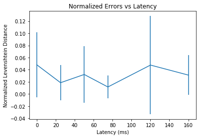

Motion to Photon Latency and Typing Performance
How does the latency in a display's rendering affect someone's ability to type? At a certain point a slow display/keyboard is unsable, but why is this and how slow is too slow? Some display technologies (like e-ink) have very low refresh rates (10 Hz) and high input lag >50 ms. This project is a quick exploration to get a sense of how visual display lag feels while typing. It is definitely a first pass (and imprecise in timings), but you can experience a reasonable approximation of what display lags feel like when you are typing.
You can try a demonstration that simulates the effect of a high latency input device and/or a low frame rate display (here). The source code is available on github. This simulation assumes that the rendering and input latency of the browser/keyboard/display is effectively zero compared to the added latency. This will not be true in the high performance regime, however it is a reasonable approximation for slower input speeds that you might expect on low power devices.
In addition to this basic simulation, I also ran a more formal study (link). This experiment examines the hypothesis that higher latency will result in more mistakes. Note that while it is possible to add lag in both the input and the frame rate, I would conjecture that lag from frame rate is a consequence of the general lag of a display. More precisely the effect of frame-rate lag should be, on average, be equivalent to a display lag of ~2/frameRate - the average lag induced by the refresh rate.
After running a pilot study, I did not see any (significant) correlation between latency and typing errors. My initial supposition was that a slower display would result in more errors (see graph below). This may be true for longer text sequences, but I have not seen any evidence yet. Nonetheless a lag of ~100 ms is really annoying - it feels restrictive. This result suggests that the effect of latency is prehaps less tangible and more related to the perception of causality.
Go to source code
